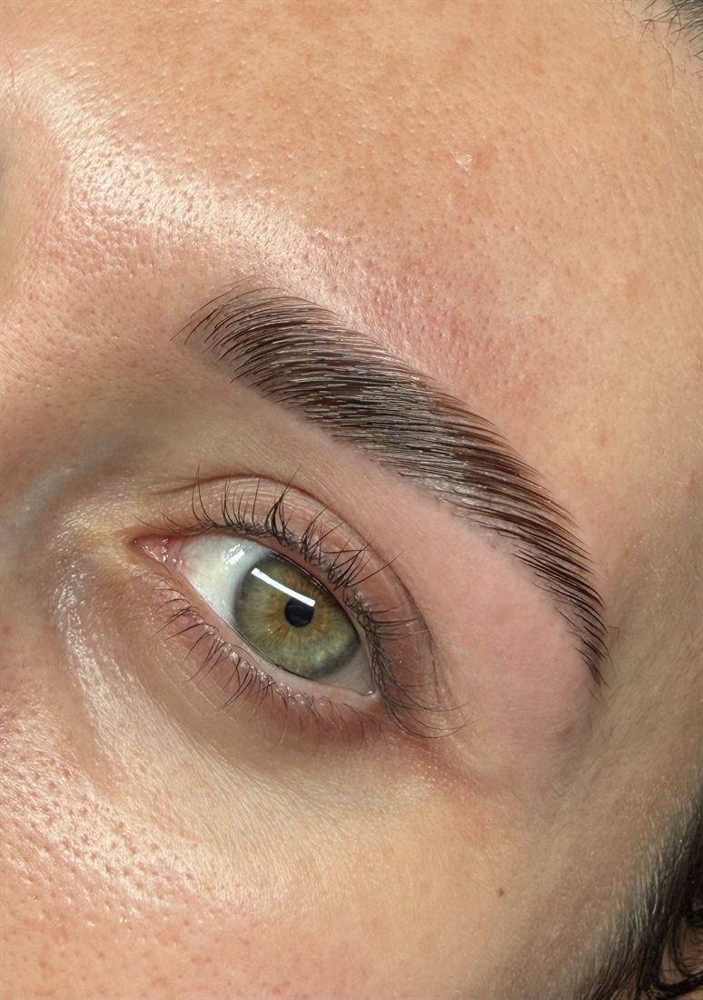
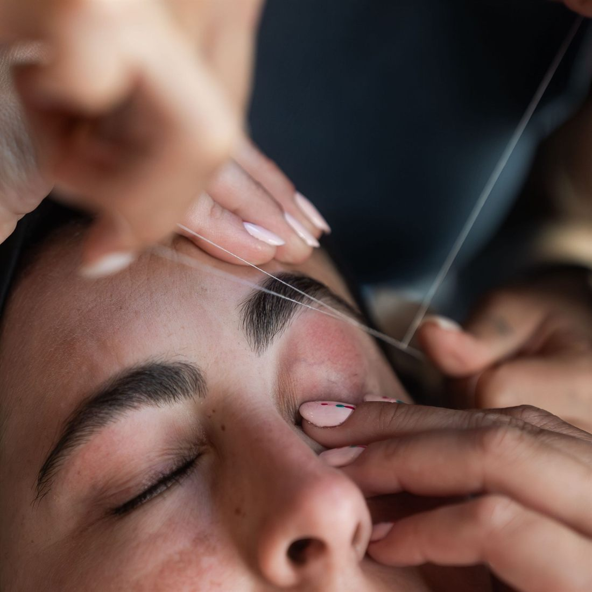
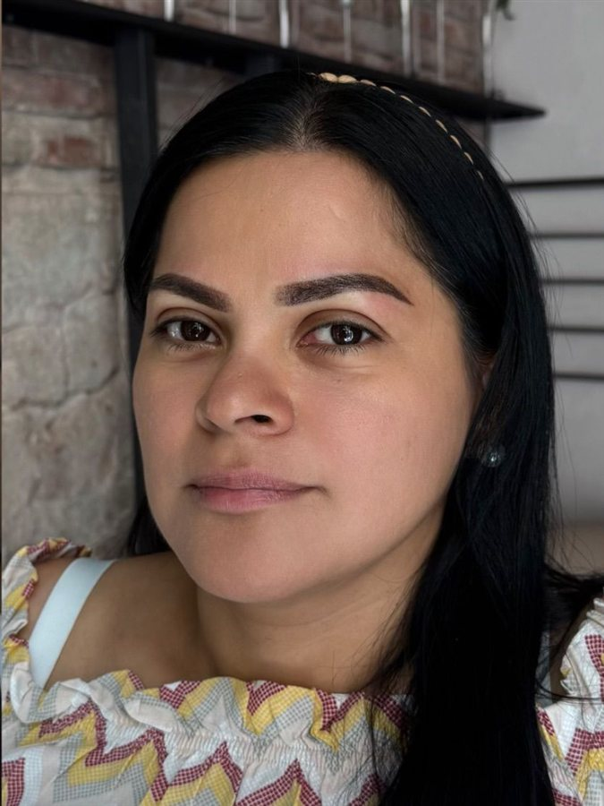
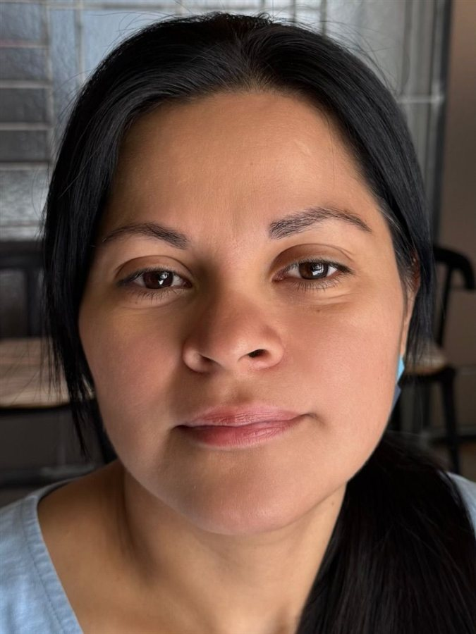
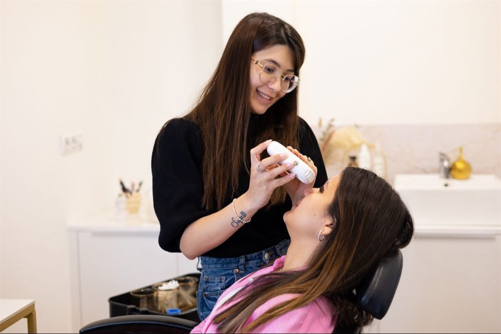
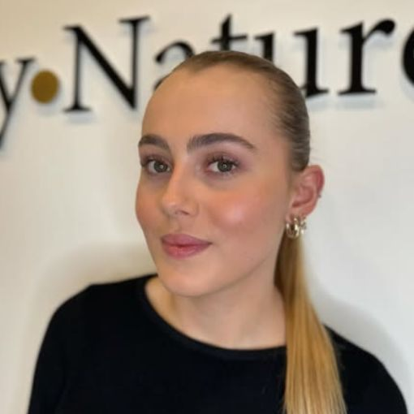

Travessia dels Canaders, 8 · Girona
Cejas, pestañas y labios con un resultado natural
Diseño de cejas con hilo, laminado, micropigmentación, lifting de pestañas y tratamientos de labios, en el centro de Girona. Más de seis años realzando tu belleza natural.
4,9 en Booksy (216 reseñas) y en Google (164)

Cada ceja se diseña midiendo tu rostro

- I
Inicio
Marcamos dónde empieza la ceja según el lagrimal, para que la mirada quede abierta.
- II
Arco
Buscamos el punto más alto en línea con la pupila: es lo que da expresión.
- III
Final
Alargamos la cola hasta donde favorece a tus ojos, sin endurecer el gesto.
Después trabajamos con hilo, cera, laminado o pigmento según lo que quieras conseguir, respetando siempre tu pelo natural.
Antes y después
Trabajos reales del estudio. Arrastra la línea para comparar.


AntesDespuésPrecios
Reservar en Booksy

Un estudio tranquilo en el centro
Te atienden María José y Karoline, en un espacio acogedor y moderno de la Travessia dels Canaders, en pleno centro de Girona. Trabajamos con técnicas personalizadas y productos de calidad.
«Karoline es muy profesional, delicada y cuidadosa con cada detalle. Siempre sabe darme la forma perfecta que resalta mis facciones sin perder naturalidad.»
«Me hice el microblading en este centro de Girona y el resultado es súper natural, justo lo que quería.»
«Muy bien como Siempre ☺️Gracias María José x hacer perfectas mis cejas»
«Tracte amable i professional»
Ven a vernos
- Dirección
- Travessia dels Canaders, 8 · 17002 Girona
- Citas
- Solo con cita previa. Los huecos libres, siempre al día en Booksy.
- Pago
- Aceptamos tarjeta. Tenemos programa de fidelidad.